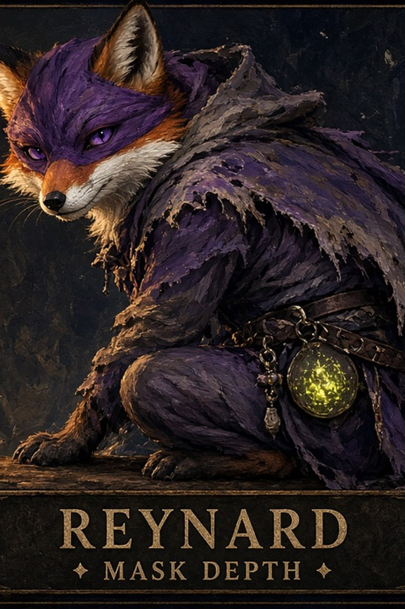

The Seventh Gate · SoftReynard7 · Mask Depth
Reynard Soft7
Seven named cards. Soft launch on Robinhood Chain mainnet — not a promise, a mint.
The Seventh Gate
A glass portal orb — lime ember swirling inside — with Soft7 thresholds as luminous nodes. Touch a node to pass through.
Contract
0x73D7b2611509C14078e16f572bE5aC7D91879DC2
Reynard Soft7 · SOFT7 · supply 7 · Robinhood Chain 4663
Cards 1–7


How to see Soft7 tonight
- Open the OpenSea collection (best Robinhood-adjacent surface).
- Confirm on Blockscout for on-chain truth.
- Optional: Robinhood Wallet dapp browser → OpenSea (RH Chain). Soft7 is not claimed for the native Wallet NFT tab.
Mainnet announce
Soft7 RH mainnet announce on X
Sepolia soft gate still exists as prior chapter only: 0xa96141BFB1dfeffeDcf5E07F204CFC70B2f1AF3f